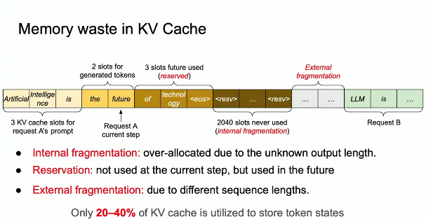
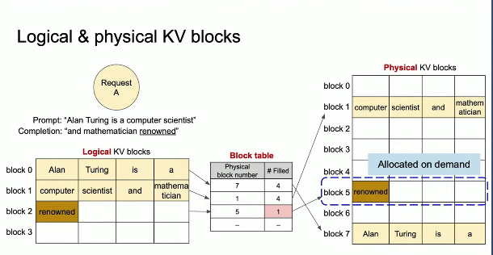

How vLLM Solves Out-Of-Memory Errors in LLMs
How vLLM Solves Out-Of-Memory Errors in LLMs
Understanding the Problem: KV Cache Memory Challenges
During LLM inference, the model stores key-value (KV) representations of all previously generated tokens in memory. As sequences generate more tokens, this KV cache grows dynamically, creating significant memory management challenges that traditional systems struggle to handle efficiently.
Three Types of Memory Waste

Traditional memory management for LLM inference suffers from three critical inefficiencies:
1. Internal Fragmentation
Systems must pre-allocate memory slots for the maximum possible sequence length since the final output length is unknown in advance. When sequences end earlier than expected, the unused pre-allocated space is wasted.
2. Reservation Overhead
Memory slots are allocated but remain idle while waiting for future tokens to be generated. This happens because traditional systems require contiguous memory blocks for each sequence, forcing early allocation of space that may not be immediately needed.
3. External Fragmentation
Different requests have varying sequence lengths, creating unusable gaps between allocated memory blocks. These gaps cannot be efficiently utilized by other sequences, leading to wasted memory capacity.
The Solution: PagedAttention

vLLM introduces PagedAttention, which fundamentally reimagines how KV cache memory is managed. Instead of requiring contiguous memory blocks, PagedAttention partitions the KV cache into fixed-size blocks, allowing sequences to occupy non-contiguous memory locations—similar to how operating systems manage virtual memory.
Core Components
KV Blocks
The KV cache is divided into fixed-size blocks (typically 16-32 tokens each), analogous to memory pages in operating systems. Each block stores key-value vectors for a fixed number of tokens.
Block Tables
Each sequence maintains a block table that maps logical blocks to physical memory blocks, similar to page tables in OS memory management. This mapping enables non-contiguous storage while maintaining logical sequence ordering.
On-Demand Allocation
Physical blocks are allocated only when needed as sequences grow, rather than pre-allocating the maximum possible length. When a logical block fills up, vLLM allocates a new physical block from the free pool on demand.
How It Works in Practice
During attention computation, PagedAttention efficiently fetches KV blocks from arbitrary memory positions and patches them together for processing. The algorithm operates purely at the memory management level without requiring any model architecture changes.
For example, consider the prompt “Alan Turing is a computer scientist and mathematician.” This gets partitioned into logical blocks like “Alan Turing is a” and “computer scientist and mathematician.” These logical blocks map to physical blocks that may be scattered across GPU memory. As the model generates new tokens, they’re appended to existing blocks (like “renowned”) or trigger allocation of new blocks on demand.
CPU offloading of model weights
The CPU offloading technique allows parts of the model weights to be kept in CPU memory and streamed to the GPU on demand during inference, effectively expanding usable GPU memory capacity virtually.
How CPU Offloading Works in vLLM
When GPU VRAM fills up, parts of the model weights that are not instantly needed are moved to CPU memory. During a forward pass, required weights are moved back to GPU for computation and then possibly offloaded back to CPU. This streaming of weights between CPU and GPU happens layer-wise and dynamically to maximize memory usage without crashing due to out-of-memory errors. Note : Increasing CPU offloading for model weights can free GPU VRAM for KV cache but does not directly offload the KV cache itself.
Practical Summary
CPU offloading in vLLM helps when the total model + KV cache size exceeds GPU memory by offloading model weights to CPU memory dynamically. The KV cache needs to fit on the GPU, so very large KV caches risk out-of-memory even with CPU offload.
Prevention of Out-of-Memory Errors
Dynamic Resource Management
Instead of failing when a single large contiguous block isn’t available, vLLM can utilize any available blocks scattered across memory. The system dynamically trades sequence length for batch size based on actual available memory.
Minimal Fragmentation
Internal fragmentation is bounded by block size (16-32 tokens) rather than maximum sequence length. External fragmentation is eliminated entirely since all blocks have uniform size.
Predictable Memory Usage
The total physical cache memory remains statically allocated, providing protection against runtime OOM errors. The scheduler intelligently manages which requests advance based on available blocks in the free pool.
Efficient Cleanup
When sequences complete, their blocks immediately return to the free pool for reuse by other requests, maximizing memory utilization.
Virtual Memory Expansion
CPU offloading allows model weights to be stored in CPU memory and streamed to GPU on demand, virtually expanding GPU capacity beyond physical VRAM limits.
Dynamic Weight Streaming
Weights are moved between CPU and GPU dynamically during inference, layer by layer, to ensure only necessary weights are in GPU memory at any time.
Complementary Memory Management
By offloading model weights, CPU offloading frees GPU VRAM for KV cache management, working alongside PagedAttention to prevent OOM errors in larger models.
Photos courtesy of Fast LLM Serving with vLLM and PagedAttention